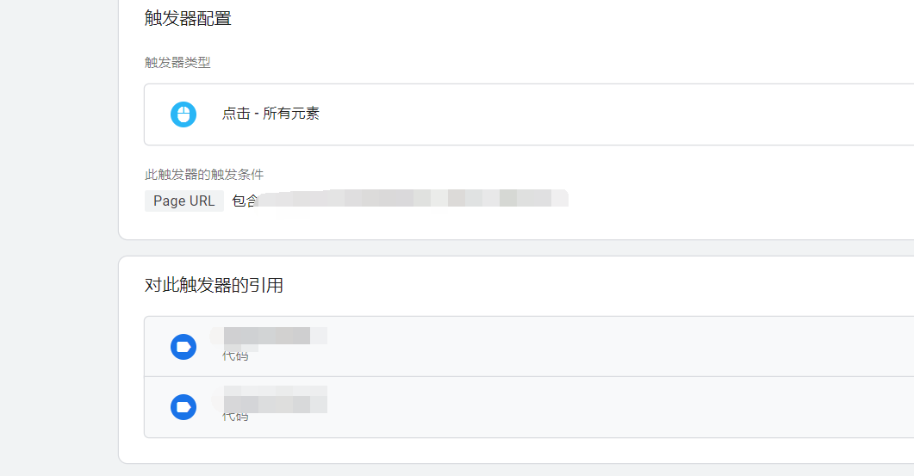
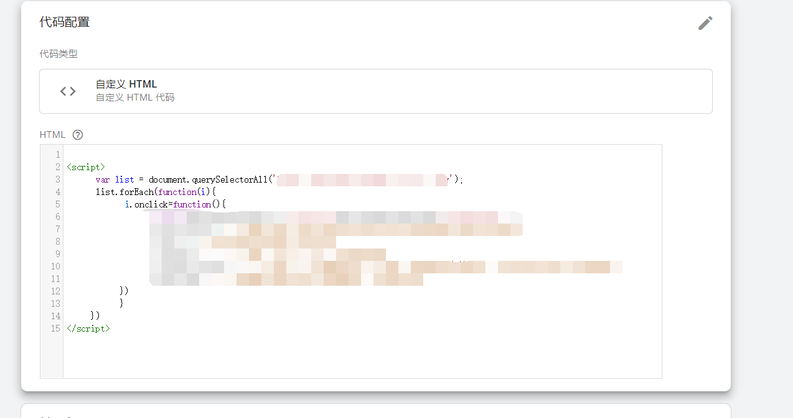

Google 跟踪代码管理器是一个跟踪代码管理系统 (TMS)，可以帮助您快速轻松地更新网站或移动应用上的跟踪代码及相关代码段（统称为“代码”）。将一小段跟踪代码管理器代码添加到项目后，您可以通过网页界面安全轻松地部署 Google Analytics（分析）和衡量代码配置。
在通过clickClasses给相同class的多个元素块绑定click事件埋点的时候，发现无法实现，通过gtm管理器调试发现，点击的时候，显示的是里层被点击的元素，而我们想要绑定整个外层的大块元素，所以这时候我们只能自己写js实现了。
1、新建触发器，绑定页面加载事件，到某个页面

2、绑定事件代码，这里发现，正常addEventListener默认是冒泡事件，给父元素绑定click事件，点击子元素的某个元素会冒泡的顶级元素，但是这里并不能冒泡上去，所以暂时兼容办法，采取DOM0级事件绑定，onclick方式，但是这样有一个弊端，就是如果该元素本身原来如果有click事件，会被覆盖，所以如果是使用这种方法，一定要避开已经有绑定click事件的元素。
